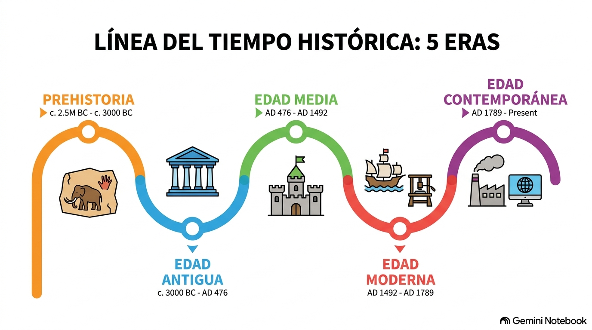

Geografía e Historia: Historia de España
Recurso Didáctico Interactivo adaptado para 2º de Bachillerato bajo metodologías de accesibilidad cognitiva y Lectura Fácil.

INTRO BLOQUE I
BLOQUE I
 BLOQUE II
BLOQUE II
 BLOQUE III
BLOQUE III
 BLOQUE IV
BLOQUE IV
 BLOQUE V
BLOQUE V
 BLOQUE VI
BLOQUE VI
¡Hola! Te damos la bienvenida al aula digital
Este espacio digital interactivo está diseñado especialmente para ayudarte a repasar, asimilar y comprender de forma amena los contenidos curriculares oficiales de Historia de España de 2º de Bachillerato y prepararte de forma sobresaliente para las pruebas de acceso a la universidad (EBAU / EvAU).
Aquí encontrarás resúmenes estructurados, esquemas visuales adaptados para evitar la fatiga visual, vídeos explicativos de apoyo para cada etapa histórica y pop-ups interactivos con curiosidades y documentos históricos clave.
🧠 Nuestro Método: Accesibilidad y Claridad
La información está jerarquizada de forma limpia. Hemos evitado códigos desordenados, textos flotantes que tapen las imágenes o tipografías de difícil lectura. Además, al final de cada tema dispones de un banco de preguntas XML para practicar en tus aulas virtuales.
Herramientas del Historiador: Fuentes y Líneas Temporales
Antes de sumergirte en los bloques históricos, recuerda que para comprender el pasado debemos aprender a clasificar las fuentes de información y situar los acontecimientos cronológicamente de forma correcta.
 Esquema didáctico e interactivo sobre la división y tipología de las fuentes históricas
Esquema didáctico e interactivo sobre la división y tipología de las fuentes históricas
Temario Interactivo del Curso
Haz clic en el botón de cualquiera de los temas disponibles para acceder directamente a sus apuntes multimedia:
📖 Bloque I: La Construcción del Estado Liberal (1833 - 1874)
Tema 1: La Crisis del Antiguo Régimen y las Cortes de Cádiz
La ocupación napoleónica, la gloriosa Guerra de la Independencia de 1808 y la redacción de nuestra primera Constitución: "La Pepa" de 1812.
Tema 2: La Conflictiva Construcción del Estado Liberal
El accidentado reinado de Isabel II, las guerras carlistas, las drásticas desamortizaciones de Mendizábal y Madoz, y el papel de las regencias.
Tema 3: El Sexenio Revolucionario (1868 - 1874)
Del destronamiento de Isabel II a través de "La Gloriosa" y el breve reinado de Amadeo de Saboya, hasta la proclamación de la Primera República.
📖 Bloque II: La España de la Restauración y su Oposición (1875 - 1902)
Tema 1: El Régimen de la Restauración y el Sistema Canovista
El regreso de Alfonso XII al trono, las bases constitucionales de 1876, el caciquismo electoral, el turno de partidos y el Pacto del Pardo.
Tema 2: Industrialización y Movimiento Obrero
El despegue industrial catalán y vasco, el auge ferroviario, y la aparición de la AIT, el socialismo de Pablo Iglesias y el anarquismo español.
Tema 3: El Nacimiento de los Nacionalismos y la Crisis de 1898
El surgimiento de la identidad política catalana, vasca y gallega, la Guerra de Cuba y Filipinas, y el impacto moral del Desastre del 98.